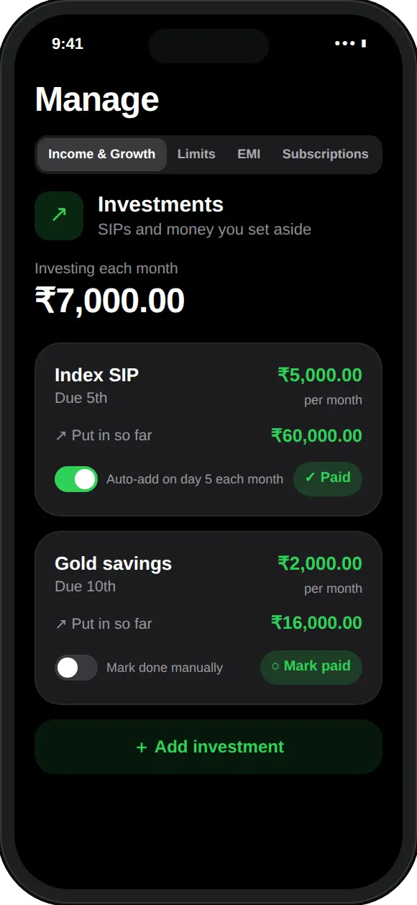
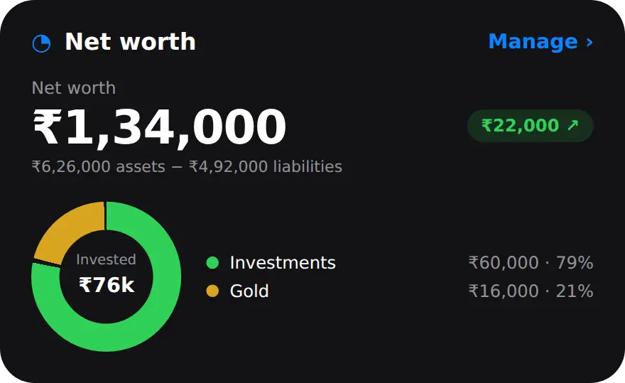

What is net worth, and how do you calculate it?
Net worth is the value of what you own (assets) minus what you owe (liabilities). If you own ₹6,26,000 and owe ₹4,92,000, your net worth is ₹1,34,000.
Here is that example in full. It is a typical early-career picture: some savings, a SIP, some gold and a car loan.
| Item | Type | Amount |
|---|---|---|
| Savings account | Asset | ₹2,40,000 |
| Mutual funds | Asset | ₹2,50,000 |
| Gold | Asset | ₹1,36,000 |
| Car loan still owed | Liability | ₹4,50,000 |
| Phone EMI still owed | Liability | ₹20,000 |
| Credit card bill | Liability | ₹22,000 |
| Net worth | Assets minus liabilities | ₹1,34,000 |
A negative number is common early on, especially with an education loan, and it is not a verdict. The useful part is the trend. If your net worth grows every month, your EMIs are shrinking what you owe and your savings are adding to what you own, even in a month that felt expensive.
What should I count as assets and liabilities?
Count anything you could turn into money as an asset, and anything you would have to pay back as a liability. Use today's value, not what you paid.
- Assets: bank balances, fixed and recurring deposits, mutual funds and shares, PF and other retirement savings, gold and silver, and property at a realistic price.
- Liabilities: what is still owed on a home, car, education or personal loan, EMIs on a phone or appliance, an unpaid credit card bill, and money you owe family or friends.
- Usually left out: things that lose value quickly, such as a phone, a laptop or furniture. Leaving them out keeps the number honest.
How do I track my net worth in MoneyOS?
Add your monthly investments and loans in Manage, add everything else under Net worth extras, then read the total on the Stats tab. Four steps:
- Add what you invest every month. Open Manage, then Income & Growth, and add each SIP, recurring deposit or gold plan under Investments with its monthly contribution.
- Add your loans. Open the EMI tab and add each loan with its monthly EMI. Fill in Total loan with what you still owe today, so it counts toward your liabilities.
- Add everything else. Under Net worth extras, tap Add asset for bank balances, money already invested and gold, and Add liability for a credit card bill or money you owe a friend.
- Read your net worth. Open Stats and scroll to the Net worth card at the bottom. It shows the total, what you own and owe, how your investing is split, and the change since last month.
Investments and loans you add in steps one and two keep themselves up to date: each month's contribution adds to your assets and each EMI lowers what you owe. If you also log SIPs as payments, they do not count as spending.

Loans work the same way from the EMI tab. Once you enter the total, MoneyOS shows how much is paid, the months left and the expected payoff date, as explained in tracking EMIs alongside daily expenses.

How does MoneyOS work out my net worth?
It adds up your monthly investments and Net worth extras as assets, and the unpaid part of your loans plus your extra liabilities as what you owe. A few details are worth knowing:
- Investments count what you put in, not market value. A ₹5,000 SIP added six months ago counts as ₹30,000. Gains and losses are not tracked.
- They count from the day you add them. For money you invested before that, add the current value as a Net worth extra, such as "Mutual funds", and update it from your statement now and then.
- A loan counts only with its total. For a loan you have been paying for years, enter what you still owe today as the Total loan.
- Extras are shared across ledgers. If you keep Personal, Family and Business apart, your Net worth extras appear in all three, while investments and loans belong to the ledger you added them in.
- The monthly change counts commitments only. The chip on the Stats card compares with last month using your investments and EMIs. Extras have no date, so editing one does not show up as a change.
How do savings goals fit in?
Goals are separate. They track money set aside for a target, such as a trip or an emergency fund, and are not added to your net worth.
Open Planning on Home, then Goals, and add a target amount and date. Tap Add funds when you set money aside, and each goal shows a pace line, such as how much a month it needs to hit the date. If that money sits in a bank account you already listed as an asset, it is already in your net worth once.
All of this stays on your iPhone. There is no account and no bank login, and nothing is sent to a server. Read what stays on your phone, or why MoneyOS was built this way.
Frequently asked questions
What is net worth in simple words?
Net worth is everything you own minus everything you owe. Add up your bank balances, investments and valuables, subtract your loans and unpaid bills, and the result is your net worth.
Is a negative net worth bad?
Not on its own. Many people start their careers with an education loan or a car loan and a negative net worth. What matters more is the direction: whether the number grows from one month to the next.
Should I count my house or car?
Count what you could reasonably sell them for, and count the loan against them in full. Many people leave out things that lose value quickly, such as a phone or furniture, to keep the number honest.
Does MoneyOS show the market value of my mutual funds?
No. For an investment you add as a monthly commitment, MoneyOS counts what you have put in since you added it, not its market value. To reflect growth, update a Net worth extras entry with the current value from your statement.
Are savings goals included in net worth?
No. Goals in MoneyOS track how much you have set aside for a target, but they are not added to net worth. If the money sits in a bank account you already listed, it is counted once, there.
Is MoneyOS free?
Yes. The whole app is free, with no subscription, no ads and no in-app purchases. There is no account and no bank login, and your figures stay on your iPhone.